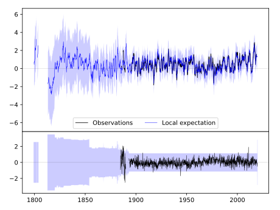
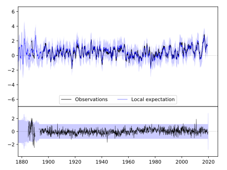
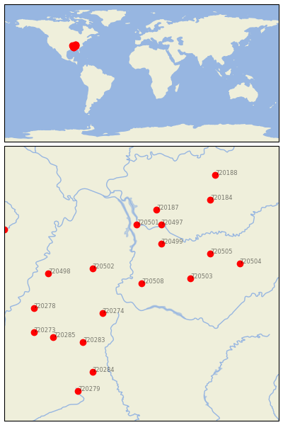

WAYNESBORO [USA]


| Neighbour | Name | Country | Distance | Lon/Lat | Years |
|---|
| 720508 | WAYNESBORO | USA | 0 | -87.8, 35.3 | 1884-2019 |
| 720503 | LEWISBURG EXP STN | USA | 91 | -86.8, 35.4 | 1888-2019 |
| 720499 | DICKSON | USA | 96 | -87.4, 36.1 | 1885-2019 |
| 720502 | JACKSON EXP STN | USA | 96 | -88.8, 35.6 | 1891-2019 |
| 720274 | BOONEVILLE | USA | 98 | -88.6, 34.7 | 1889-2019 |
| 720501 | DOVER 1 W | USA | 133 | -87.9, 36.5 | 1893-2019 |
| 720497 | CLARKSVILLE WWTP | USA | 138 | -87.4, 36.5 | 1854-2019 |
| 720505 | MURFREESBORO 5 N | USA | 143 | -86.4, 35.9 | 1883-2019 |
| 720187 | HOPKINSVILLE | USA | 168 | -87.5, 36.8 | 1893-2019 |
| 720283 | PONTOTOC EXP STN | USA | 172 | -89.0, 34.1 | 1889-2019 |
| 720498 | COVINGTON 3 SW | USA | 173 | -89.7, 35.5 | 1883-2019 |
| 720504 | MC MINNVILLE | USA | 186 | -85.8, 35.7 | 1872-2019 |
| 720285 | WATER VALLEY | USA | 204 | -89.6, 34.2 | 1889-2019 |
| 720278 | HERNANDO | USA | 207 | -90.0, 34.8 | 1882-2019 |
| 720284 | STATE UNIV | USA | 220 | -88.8, 33.5 | 1886-2019 |
| 720184 | BOWLING GREEN RGNL A | USA | 226 | -86.4, 37.0 | 1878-2019 |
| 720273 | BATESVILLE 2 SW | USA | 229 | -90.0, 34.3 | 1882-2019 |
| 720279 | LOUISVILLE | USA | 272 | -89.1, 33.1 | 1888-2019 |
| 720188 | LEITCHFIELD 2 N | USA | 279 | -86.3, 37.5 | 1893-2019 |
| 720016 | CORNING | USA | 280 | -90.6, 36.4 | 1891-2019 |